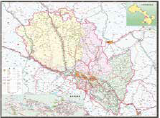 兰州土地总面积1.31万平方公里，市区面积1631.6平方公里。现辖城关、七里河、西固、安宁、红古5区和永登、榆中、皋兰3县，53个街道、46个镇、15个乡，405个社区、730个村。全市常住人口370.55万人，其中城镇人口300.18万人，市政府驻地城关区。
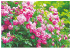 玫瑰 1984年2月25日由兰州市人大常委会讨论通过，命名玫瑰为兰州市市花。兰州玫瑰属半重瓣红玫瑰，其特点是瓣大肉厚，色艳味浓，花产量、含油量和玫瑰油质量都很高，既有较高的经济价值，又有较高的观赏价值，同时还具有很强的人文宣传作用。
国槐 1984年2月25日由兰州市人大常委会讨论通过，命名 国槐为兰州市市树。国槐为中国庭院常用的特色树种，是华北平原和黄土高原常见的树种，材质坚硬，易加工，耐腐蚀，花蕾可做染料，果肉能入药，种子可作饲料，是用材及经济林兼用的树种，为城乡良好的遮荫和行道树种。
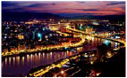 一条河 黄河，中华民族母亲河，流经兰州市域 150.7 公里，使兰州成为黄河唯一穿城而过的省会城市。
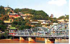 一座桥 中山铁桥，建于公元1907年（清光绪三十三年），是黄河上第一座真正意义的现代桥梁，有“天下黄河第一桥”之称。
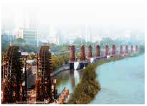 一轮车 兰州水车，明嘉靖年间进士段续所造， 至今近500年历史，于1993年建有水车博览园。兰州是国内水车遗迹最多和保存最完整的城市，被誉为“水车之都”。
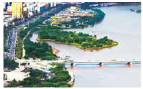 一条线 黄河风情线，依河而建的百里生态景区，是全国最长的市内滨河公园和最大的城市带状公园。2007年获“中国人居环境奖”，2008年获“迪拜国际改善人居环境最佳范例奖”。
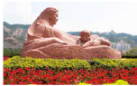 一尊像 黄河母亲雕像， 由甘肃著名雕塑家何鄂创作，曾获全国首届城市雕塑方案评比“优秀奖”，已成为黄河文化和中华民族母亲形象的代表。
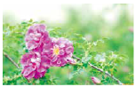 一朵花 玫瑰，目前全市种植面积 17.79 万亩，年产量3.25万吨，花产量和玫瑰产品生产量占全国总量70％以上，已建成“国家级玫瑰标准化示范基地”一个，产品获国家“原产地标记注册证”，远销国内外多个城市和地区。
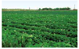 一棵菜 兰州高原夏菜，在国家质监总局开展的2015年区域品牌价值评价工作中，“兰州高原夏菜”品牌价值评估为56.1亿元。2016年种植面积达108.12万亩360多个品种，产量312万吨，畅销国内外100多个城市和地区，年外销量180万吨。
一碗面 牛肉面，兰州知名特色饮食，以“汤镜者清、肉烂 者香，面细者精”的独特风味，赢得国内外顾客一致好评，被誉为“中华第一面”。目前有各类经营店面1600多家，年营业额10亿元以上。4 面”。目前共有各类经营店面1600多家，牛肉10亿元以上。
一本书 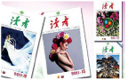 《读者》杂志，进士段续所造，1981至今近年创刊，年发行量居综合水车博览园，是国内水性期刊中国和亚洲第一、世界第四位，是“中国期刊第一品牌”和世界华文第一期刊，被誉为“中国人的心灵读本”。
一台戏 兰州歌舞剧院排一台的百里生态景区，是全演的大型民族舞剧《大梦敦煌》，大型大型民族舞剧《丝路花雨》获中宣部的城市带状公园，2007是近年中国原创舞剧的顶级之程奖”、中 008年获迪拜国际改善作，获中宣部“五个一工程奖”、 家舞台艺术程奖”、中国舞蹈“荷花奖”、文化部“文华家舞台艺术精品工程”等多项荣誉。近年来， 中国舞蹈“荷花奖”、文化部“文 梦敦煌》、梦敦煌》、《鼓舞中华》也同样蜚声中外。华奖”等多项荣誉，2005 年荣 登“国家舞台艺术精品工程”十大精品工程榜首。已在国内外演出千余场，成为中国舞台艺术“多演出多产出”的成功范例。
丝路明珠 兰州是丝绸之路经济带核心节点城市。兰州的建城史与丝绸之路的兴起一样久远，在 200年前的西汉时期，兰州设立了县治，古称“金城”。2100年前，张骞出使西域开辟丝绸之路，在兰州留下了历史的印记。兰州因此成为丝绸之路的商贸重镇，商旅驼队从兰州经过黄河，北上河西走廊，出敦煌、到新疆，前往中亚、西亚和欧洲。 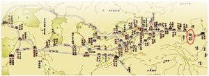
黄河之都 兰州是黄河唯一穿城而过的省会中心城市。黄河流经兰州150.7公里，其中市区近50公里，东西黄河穿城，南北两山对峙，城市景观独特，中山铁桥、黄河母亲雕塑、兰州水车、羊皮筏子是城市的文化名片， 兰州百合、玫瑰、瓜菜和牛肉拉面在全国享有盛名，被称为“黄河之都 • 金城兰州”。 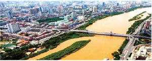
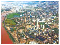 工业基地 兰州是国家“一五”、“二五”和“三线”时期建成的工业基地。石油化工、有色冶金、装备制造、能源电力、建材是传统支柱产业。近年来，产业结构逐步调整升级，生物医药、新能源等战略性新兴产业发展 势头良好，人体疫苗、动物疫苗产量分别占全国的 70％和 50％，绿色镀膜装备等技术和产品在国内领先。同时，兰州也是中亚和我国 西部能源东送的“咽喉”和集散地，有6条国家油气管线经过，年过境原油量达2000万吨，远期将超过6000万吨，成品油约3300万吨。
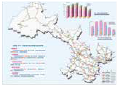 交通枢纽 兰州处于大西北的“十 字路口”，承东启西、连南接北，有西北地区最为密集的铁路网，国家4大铁路干线、7条高速公路构成了新的亚欧大陆桥，兰州铁路编组站和兰州西客站是我国西部最大的路网型铁路编组站和客运枢纽。世界一次性建设里程最长的高速铁路从兰州直通新疆，2017年宝兰客运专线、兰渝铁路建成后，将进一步 打通兰州与中东部和大西南的快速交通 连接。 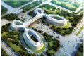 4条数字光缆主干线在兰州交汇，国际国内航线 80多条。兰州也是全国9大物流区域、10大物流通道和21个物流节点城市之一，市场辐射周边8省区、3亿多人口，在开拓西部大市场中具有特殊的功能和地位。
文化胜地 兰州历史文化悠远厚重，文溯阁《四库全书》、宋本《淳化阁帖》、宋刻本《汉隽》、元刻本《事类赋》、明刻本《艺文类聚》、 清铜活字印本《古今图书集成》等，都是历代书目中极为罕见的珍本。 兰州是黄河上游的文化旅游中心，是丝绸之路大旅游区的中转站，列为世界文化遗产的丝绸之路，有两处遗产点在兰州一小时和三小时都市圈范围内。太平鼓、高高跷、黄河水车制作技艺、兰州鼓子 是国家级非物质文化遗产保护项目。按照甘肃建设华夏文明传承创 新区的部署，正在打造兰州都市文化产业区，将把兰州建成中国黄河文化体验之都、丝绸之路文化产业名城。
科教名城 兰州是重要的科研教育基地。这里有中科院兰州分院、 兰州大学等一批高水平的科研院校。目前有高等院校34所，国家重点实验室11个， 两院院士18名，兰州也是我国航天事业重要的科研生产基地，人才密度和综合科技实力居全国大中城市前列。 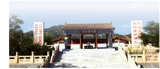
兰州地处青藏高原向黄土高原的过渡地带，地貌大致可分为山 地、半山地、河川地三种类型。市区海拔平均高度1518米，年均气温 10.4℃，年均降水量293mm，全年日照时数平均2424小时，无霜期182天以上，属中温带大陆性气候，冬无严寒，夏无酷暑，气候温和。 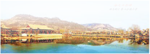
兰州境内已探明各类矿床156处，矿种35个，主要有黑色金属、有色金属、贵金属、稀土和能源矿产等9大类。兰州是黄河上游最大的水力发电中心，是全国工业用电成本最低的城市之一。贯穿市域的黄河及其支流湟水、大通河等，水资源丰富，水量稳定，可满足城市工农业用水和生活用水。黄河给兰州带来丰富的特产，白兰瓜、软儿梨、冬果梨、白粉桃等瓜果久负盛名，百合、黑瓜子、玫瑰、蕨菜、水烟等土特产品蜚声中外，使兰州成为享誉海内外的瓜果城，素有景下杭州、品瓜上兰州”之说。 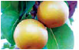